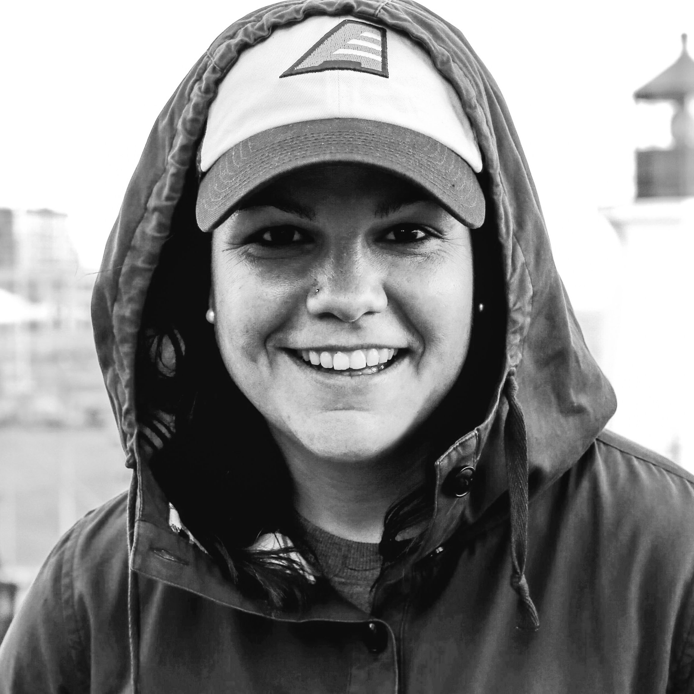

Hi, I’m Erin. I’m a Boston-based designer and video editor with 15+ years of experience in sports production and live event presentation.
I’m currently part of the Creative Team at Van Wagner Sports & Entertainment, where I work as a video editor and motion graphics designer supporting major events and teams worldwide. My work spans video production, design, and project management — creating in-arena content for clients including the National Football League (Super Bowl and International Games), Major League Baseball (London Series & HRDX), the College Football Playoff National Championship, NCAA March Madness and Final Four, Premier Lacrosse League, and other collegiate championships.
Previously, I served as Senior Director for Creative & Video at the America East Conference, where I led a creative team producing content across social, digital, broadcast, print, and in-venue platforms — all focused on elevating the conference brand through cohesive visual storytelling.
Outside of work, you’ll find me hiking in the White Mountains with my dog, cycling, relaxing at the beach, taking photos, or competing with my brother in our annual Oscars ballot challenge. I’m also a former college soccer player and coach who’s always up for a pick-up game.
I’m passionate about creative problem-solving and always open to interesting freelance opportunities. Let’s connect.